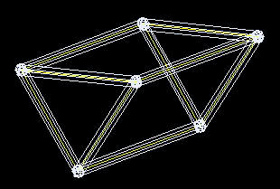
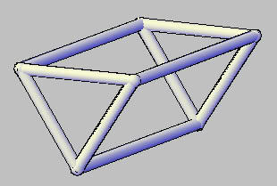

一般在建立3D圓柱時，必須使用到UCS來輔助，這時需要有扎實的空間觀念才能幫你快速建模!
範例中我們必須想辦法把Z軸貼齊路徑，所以你必須先了解 右手定則，這樣你才不會在3D空間中迷失~
有興趣的朋友可以下載範例檔一起討論練習，做出來的朋友別忘PO上來分享一下!!
https://app.box.com/s/2fdv2qe32afketvmhr8t
另外我這裡有一個有趣的作法，建模過程使用上述的步驟有點繁瑣，
所以這裡我把它巨集化，並建立成工具按鈕，這樣建模的步驟只剩下 指定Z軸 >> 選擠出路徑 >> 完成。
建立3D圓柱(固定半徑)巨集語法:
*^C^CUCS;\\;UCS;Y;90;CIRCLE;@;136.5;EXTRUDE;L;;P;\
我這裡的巨集中圓半徑是使用固定的(半徑=136.5)，可以稍作改良變成由使用者來輸入半徑!
建立3D圓柱(輸入半徑)巨集語法:
*^C^CUCS;\\;UCS;Y;90;CIRCLE;@;\EXTRUDE;L;;P;\
*有興趣寫巨集的朋友，建議可以嘗試寫出建立3D圓管的巨集*